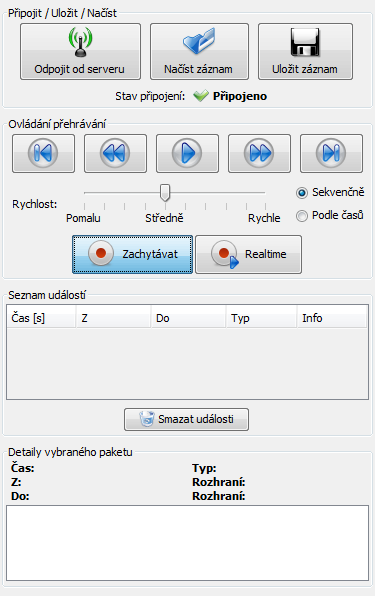
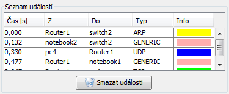

Tutorial 2: Simualční režim
- Simulační režim
- Připojení k simulátoru
- Příjem událostí, pohyb v seznamu
- Přehrávání událostí
- Uložení a načtení seznamu událostí
Příjem událostí, pohyb v seznamu
Příjem událostí
Události začnete přijímat stisknutím tlačítka Zachytávat v ovládacím panelu:
Poté se budou v seznamu událostí objevovat nové události tak, jak budou přicházet ze síťového simulátoru.
Popis seznamu událostí
Následuje ukázka zachycených událostí:
Jednotlivé údaje v seznamu
Každý řádek reprezentuje jednu zachycenou událost. Význam sloupečků je následující:
- Čas[s] - časová značka zachycení paketu. Vždy se počítá od 0,00.
- Z - jméno zařízení odkud byl vyslán paket.
- Do - jméno zařízení, kam byl vyslán paket.
- Typ - typ paketu.
- Info - barva specifická pro typ paketu.
Detail události
Pokud je v seznamu událostí nějaká událost označena, pak je její detail vidět v Detailu paketu pod tabulkou:

V detailu jsou navíc informace o rozhraních zdrojové a cílové komponenty a detailnější popis.
Pohyb v seznamu událostí
Do seznamu událostí se dostaneme klikem myši na některou událost. Dále se můžeme v seznamu pohybovat šipkami nahoru/doů, či tlačítky pro přehrávání:

Při změně aktuálního řádku se změní i detail paketu pod tabulkou.
Smazání událostí
Seznam zachycených událostí je kdykoliv možné smazat tlačítkem Smazat události.
Další částí tutorialu je: Přehrávání událostí.